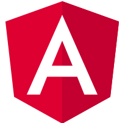

    <!-- nesse arquivo fica o Menu principal que direciona para os links dos outros projetos ,
    usando [routerLink] -->
<nav class="navbar">
  <div class="container-fluid">
    <!-- suporte a mobile -->
    <div class="navbar-header">
    
      <!-- botao icone sandwich,pra tela celular -->
      <button type="button" class="navbar-toggle collapsed" data-toggle="collapse" data-target="#bs-example-navbar-collapse-1" aria-expanded="false">
        <span class="sr-only">Visualizar itens</span>
        <span class="icon-bar"></span>
        <span class="icon-bar"></span>
        <span class="icon-bar"></span>
      </button>
      <!-- logotipo Angular -->
      <a class="navbar-brand menu_cor" [routerLink]="['']"></a>
    </div>
    <!-- navbar -->
    <div class="collapse navbar-collapse" id="bs-example-navbar-collapse-1">
      <ul class="nav navbar-nav">
        <!-- typescript -->
        <li><a class="menu_cor" [routerLink]="['/typescript']">TypeScript</a></li>
       <!-- inicio do 1º dropdown com os links -->
        <li class="dropdown">
          <a href="#" class="dropdown-toggle menu_cor" data-toggle="dropdown" role="button" aria-haspopup="true" aria-expanded="false">
            Estrutura <span class="caret"></span>
          </a>
          <ul class="dropdown-menu">
            <li>
              <!-- usa routerlink para direcionar para o projeto -->
              <!--de mesmo nome do arquivo de router app-routing.module.ts -->
              <!-- MODULOS -->
              <a [routerLink]="['/modulos']">
                Módulos
              </a>
            </li>
            <!-- <li role="separator" class="divider"></li> -->
            <li>
              <a [routerLink]="['/componentes']">
                Componentes
              </a>
            </li>
            <li>
              <a [routerLink]="['/conversor']">
                Conversor de moedas
              </a>
            </li>
         
          </ul>
        </li>
        <!-- fim dropdown -->
        
      </ul>
    </div>
  </div>
</nav>
<!-- Tutorial -->
<div class="container-fluid">
  <!-- essa tag router-outler diz que o conteudo vem atravez de rotas -->
  <router-outlet></router-outlet>
</div>


